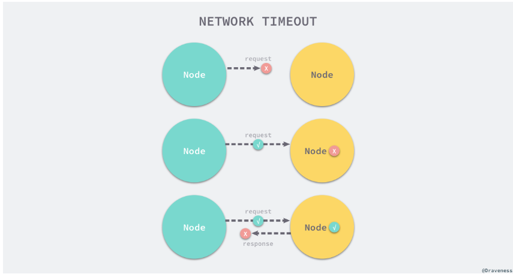
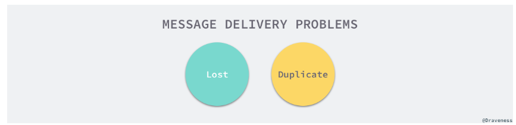
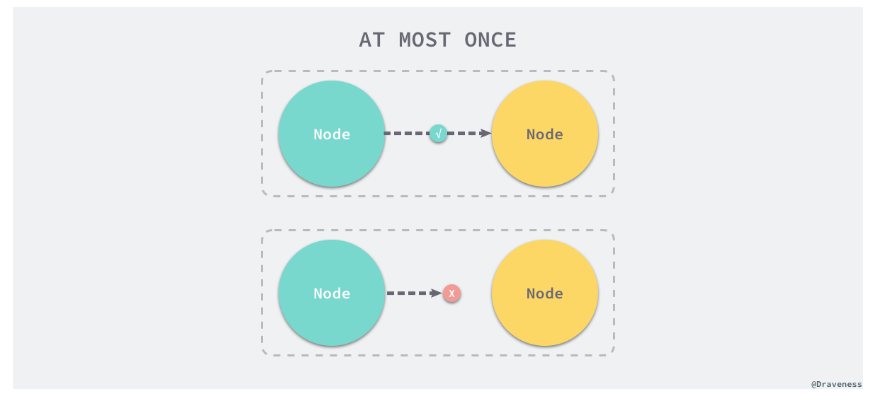
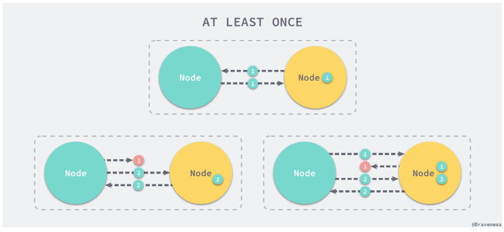
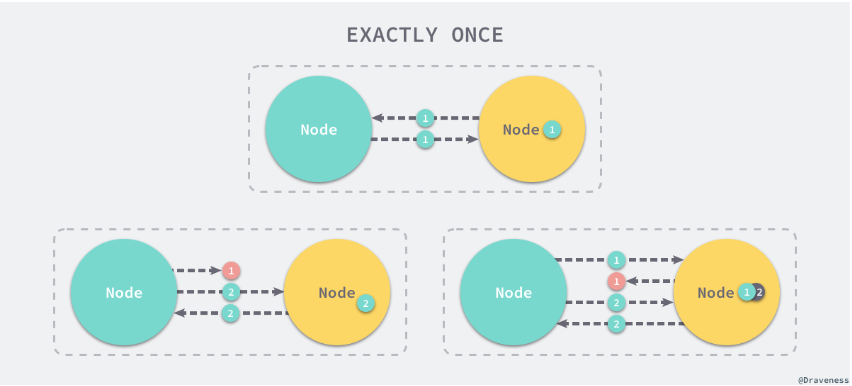

分布式系统与消息的投递¶
消息是一个非常有趣的概念，它是由来源发出一个离散的通信单元，被发送给一个或者一群接受者，无论是单体服务还是分布式系统中都有消息的概念，只是这两种系统中传输消息的通道方法或者通道不同；单体服务中的消息往往可以通过 IO、进程间通信、方法调用的方式进行通信，而分布式系统中的远程调用就需要通过网络，使用 UDP 或者 TCP 等协议进行传输。

然而网络在计算机的世界中是最不可控的，如果我们通过网络请求调用其他服务的接口，可能就会由于种种原因没有将消息送达至目标的服务，对于当前服务我们并不能控制网络的传输，在很多时候也很难控制网络通信的质量，这也就是为什么『网络是稳定、可信赖的』分布式系统中常见的谬论之一。
- 通信渠道的不可靠是造成构建大规模分布式系统非常复杂并且困难的重要原因。
网络请求¶
作为分布式系统之间各个节点的通信渠道，网络其实是非常不可靠通信方式，如果我们想要保证节点状态的一致性，这种通信方式的复杂性使得我们在进行跨服务调用时需要处理非常多的边界条件，在之前的文章 分布式系统 · 分布式事务的实现原理 中简单介绍过，网络通信可能会包含，成功、失败以及超时三种情况。

每一次网络请求其实都是一次信息的投递，由于当前的节点无法得知其他节点信息，只能通过网络请求的响应来得知这次信息投递的结果。
成功与失败¶
虽然网络的情况比较不稳定，但是我们在大多数时候通过网络传输一些信息时，无论是返回的结果是成功还是失败，其实都能得到确定的结果：

每一次确定的响应都需要这次请求在一个往返以及被调用节点中正确处理，流量既不能被中间代理丢包，也不能由于目标节点的错误导致无法发出响应，只有在同时满足了这两个条件的情况下，我们才能得到确定的响应结果。对于节点来说，这次请求返回成功还是失败都比较好处理，因为只要有确定的结果，网络请求这种通信方式与进程间通信或者方法调用这些更可靠的途径在处理上都没有太多的区别，但是在通信的过程中出现其他的问题时就比较棘手了。
超时¶
在分布式系统中，不是任何的网络请求都能够得到确定的响应，如果网络请求在往返以及被调用节点处理的过程中出现了丢包或者节点错误，发出请求的节点就可能永远也无法得到这次请求的响应。

每一个节点在发出请求之后，都对这次请求如何路由以及被处理一无所知，所以节点需要设置一个合适的超时时间，如果请求没有在规定的时间内返回，就会认为当前请求已经超时，也就是网络请求失败了。
超时的网络请求是导致分布式系统难以处理的根本原因之一，在这种问题发生时节点并不知道目标节点是否收到了当前请求，对于幂等的网络请求还好，一旦请求可能会改变目标节点的状态就非常棘手了，因为我们并不能确定上一次网络请求是在哪一步失败的，如果是响应返回的过程中发生了故障，那么如果重试一些请求就会出现问题，可能会触发银行的两次转账，这是我们无论如何也无法接受的；总而言之，网络通信的不稳定迫使我们处理由于超时而出现的复杂问题，这也是在开发分布式系统时不得不考虑的。
消息投递语义¶
在分布式系统中使用网络进行通信确实是一种不可靠的方式，消息的发送者只能知道掌控当前节点，所以没有办法保证传输渠道的可靠性，网络超时这种常见的通信错误极大地增加了分布式系统通信的复杂度，我们可以对网络提供的基本传输能力进行封装，保证数据通信的可靠性。

网络请求由于超时的问题，消息的发送者只能通过重试的方式对消息进行重发，但是这就可能会导致消息的重复发送与处理，然而如果超时后不重新发送消息也可能导致消息的丢失，所以如何在不可靠的通信方式中，保证消息不重不漏是非常关键的。

我们一般都会认为，消息的投递语义有三种，分别是最多一次（At-Most Once）、最少一次（At-Least Once）以及正好一次（Exactly Once），我们分别会介绍这三种消息投递语义究竟是如何工作的。
最多一次¶
最多一次其实非常容易保证的，UDP 这种传输层的协议其实保证的就是最多一次消息投递，消息的发送者只会尝试发送该消息一次，并不会关心该消息是否得到了远程节点的响应。

无论该请求是否发送给了接受者，发送者都不会重新发送这条消息；这其实就是最最基本的消息投递语义，然而消息可能由于网络或者节点的故障出现丢失。
最少一次¶
为了解决最多一次时的消息丢失问题，消息的发送者需要在网络出现超时重新发送相同的消息，也就是引入超时重试的机制，在发送者发出消息会监听消息的响应，如果超过了一定时间也没有得到响应就会重新发送该消息，直到得到确定的响应结果。

对于最少一次的投递语义，我们不仅需要引入超时重试机制，还需要关心每一次请求的响应，只有这样才能确保消息不会丢失，但是却可能会造成消息的重复，这就是最少一次在解决消息丢失后引入的新问题。
正好一次¶
虽然最少一次解决了最多一次的消息丢失问题，但是由于重试却带来了另一个问题 - 消息重复，也就是接受者可能会多次收到同一条消息；从理论上来说，在分布式系统中想要解决消息重复的问题是不可能的，很多消息服务提供了正好一次的 QoS 其实是在接收端进行了去重。

消息去重需要生产者生产消息时加入去重的 key，消费者可以通过唯一的 key 来判断当前消息是否是重复消息，从消息发送者的角度来看，实现正好一次的投递是不可能的，但是从整体来看，我们可以通过唯一 key 或者重入幂等的方式对消息进行『去重』。
消息的重复是不可能避免的，除非我们允许消息的丢失，然而相比于丢失消息，重复发送消息其实是一种更能让人接受的处理方式，因为一旦消息丢失就无法找回，但是消息重复却可以通过其他方法来避免副作用。
投递顺序¶
由于一些网络的问题，消息在投递时可能会出现顺序不一致性的情况，在网络条件非常不稳定时，我们就可能会遇到接收方处理消息的顺序和生产者投递的不一致；想要满足绝对的顺序投递，其实在生产者和消费者的单线程运行时是相对比较好解决的，但是在市面上比较主流的消息队列中，都不会对消息的顺序进行保证，在这种大前提下，消费者就需要对顺序不一致的消息进行处理，常见的两种方式就是使用序列号或者状态机。
序列号¶
使用序列号保证投递顺序的方式其实与 TCP 协议中使用的 SEQ 非常相似，因为网络并不能保证所有数据包传输的顺序并且每个栈帧的传输大小有限，所以 TCP 协议在发送数据包时加入 SEQ，接受方可以通过 SEQ 将多个数据包拼接起来并交由上层协议进行处理。
在投递消息时加入序列号其实与 TCP 中的序列号非常类似，我们需要在数据之外增加消息的序列号，对于消费者就可以根据每一条消息附带的序列号选择如何处理顺序不一致的消息，对于不同的业务来说，常见的处理方式就是用阻塞的方式保证序列号的递增或者忽略部分『过期』的消息。
状态机¶
使用序列号确实能够保证消息状态的一致，但是却需要在消息投递时额外增加字段，这样消费者才能在投递出现问题时进行处理，除了这种方式之外，我们也可以通过状态机的方式保证数据的一致性，每一个资源都有相应的状态迁移事件，这些事件其实就是一个个消息（或操作），它们能够修改资源的状态：

在状态机中我们可以规定，状态的迁移方向，所有资源的状态只能按照我们规定好的线路进行改变，在这时只要对生产者投递的消息状态做一定的约束，例如：资源一旦 completed 就不会变成 failed，因为这两个状态都是业务逻辑中定义的最终状态，所以处于最终状态的资源都不会继续接受其他的消息。
假设我们有如下的两条消息 active 和 complete，它们分别会改变当前资源的状态，如果一个处于 pending 状态的资源先收到了 active 再收到 complete，那么状态就会从 pending 迁移到 active 再到 completed；但是如果资源先收到 complete 后收到 active，那么当前资源的状态会直接从 pending 跳跃到 completed，对于另一条消息就会直接忽略；从总体来看，虽然消息投递的顺序是乱序的，但是资源最终还是通过状态机达到了我们想要的正确状态，不会出现不一致的问题。
协议¶
消息投递其实有非常多相关的应用，最常见的组件就是消息队列了，作为一种在各个 Web 项目中常用的组件，它提供了很多能力，包括消息的持久存储、不同的投递语义以及复杂的路由规则等等，能够显著地增加系统的可用性、起到比较比明显的削峰效果。
在这里将介绍几种比较常见的消息队列协议，我们将简单说明各个协议的作用以及它们的实现原理和关键特性，也会简单提及一些遵循这些协议实现的消息队列中间件。
AMQP 协议¶
AMQP 协议的全称是 Advanced Message Queuing Protocol，它是一个用于面向消息中间件的开放标准，协议中定义了队列、路由、可用性以及安全性等方面的内容。

该协议目前能够为通用的消息队列架构提供一系列的标准，将发布订阅、队列、事务以及流数据等功能抽象成了用于解决消息投递以及相关问题的标准，StormMQ、RabbitMQ 都是 AMQP 协议的一个实现。
在所有实现 AMQP 协议的消息中间中，RabbitMQ 其实是最出名的一个实现，在分布式系统中，它经常用于存储和转发消息，当生产者短时间内创建了大量的消息，就会通过消息中间件对消息转储，消费者会按照当前的资源对消息进行消费。

RabbitMQ 在消息投递的过程中保证存储在 RabbitMQ 中的全部消息不会丢失、推送者和订阅者需要通过信号的方式确认消息的投递，它支持最多一次和最少一次的投递语义，当我们选择最少一次时，需要幂等或者重入机制保证消息重复不会出现问题。
MQTT 协议¶
另一个用于处理发布订阅功能的常见协议就是 MQTT 了，它建立在 TCP/IP 协议之上，能够在硬件性能底下或者网络状态糟糕的情况下完成发布与订阅的功能；与 AMQP 不同，MQTT 协议支持三种不同的服务质量级别（QoS），也就是投递语义，最多一次、最少一次和正好一次。
从理论上来看，在分布式系统中实现正好一次的投递语义是不可能的，这里实现的正好一次其实是协议层做了重试和去重机制，消费者在处理 MQTT 消息时就不需要关系消息是否重复这种问题了。
总结¶
在分布式系统中想要保证消息的送达确实是一件比较复杂的事情，通信方式的不确定使得我们需要处理很多问题，我们既需要在网络错误或者超时时进行重试，还需要对一些请求支持重入和幂等，保证不会出现一致性的错误；这其实都是因为在分布式系统中，正好一次的消息投递语义是不存在的，消息要么可能会丢失，要么就可能会重复。